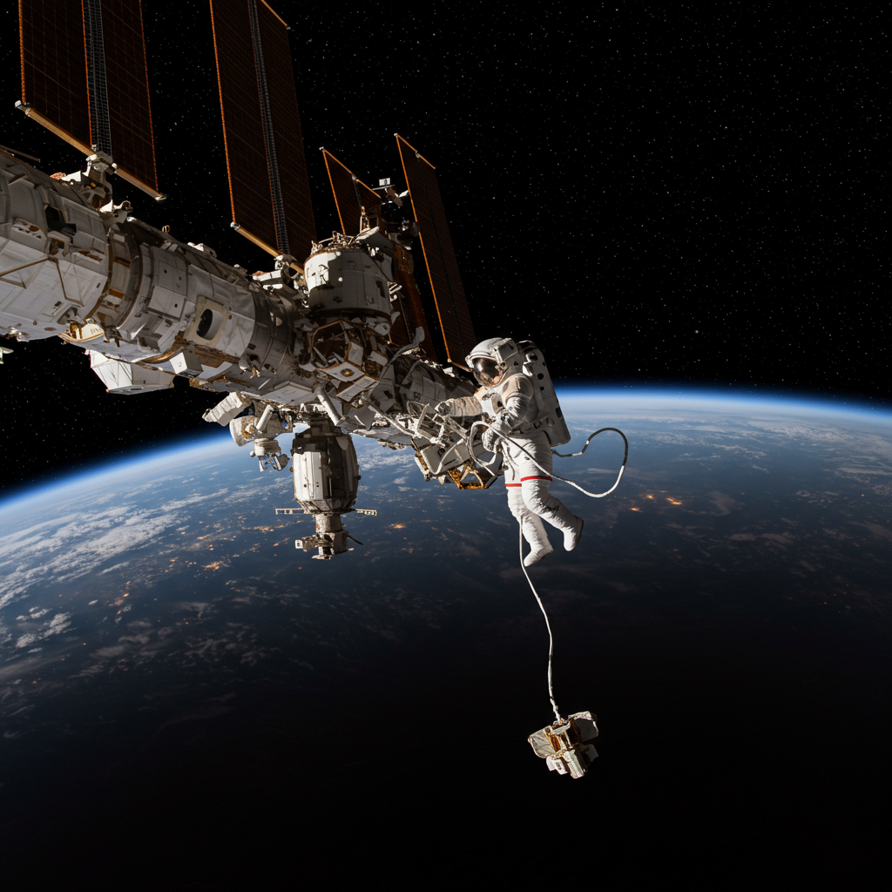

Estación Espacial Internacional (ISS)
Fecha de lanzamiento inicial: 20 de noviembre de 1998 (módulo Zarya)
Agencias: NASA (EE.UU.), Roscosmos (Rusia), ESA (Europa), JAXA (Japón), CSA (Canadá)
Objetivo
Laboratorio orbital permanente para experimentos en microgravedad, biología, física, astronomía y tecnología, promoviendo cooperación internacional.

Actividad y Ensamblaje
Construida en más de 40 misiones con colaboración internacional. Ensamblada en órbita usando el transbordador espacial y cohetes rusos. Continúa expandiéndose con nuevos módulos y sistemas.
Participación de Astronautas
Rotación continua de tripulación internacional desde el año 2000. Participación destacada del astronauta mexicano José Hernández, quien colaboró en el traslado y ensamblaje de componentes y representó el compromiso latinoamericano con la exploración espacial.
Experimentos y Tecnología
Investigación en biomedicina, desarrollo de materiales, astrobiología y sistemas de soporte vital. Pruebas para futuras misiones a la Luna y Marte, y monitoreo del clima terrestre.
Estado Actual
Activa en órbita terrestre baja (~400 km), con tripulación internacional. Prevista para operar al menos hasta 2030 como símbolo de cooperación pacífica y plataforma esencial para la ciencia y la exploración espacial.
⬅ Volver al Archivo de Satélites